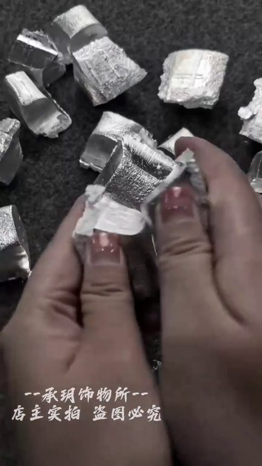
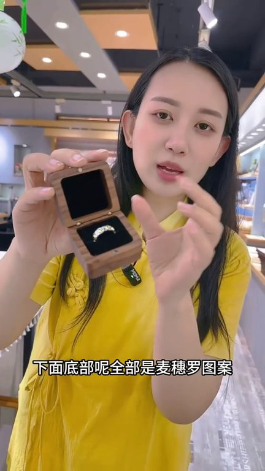
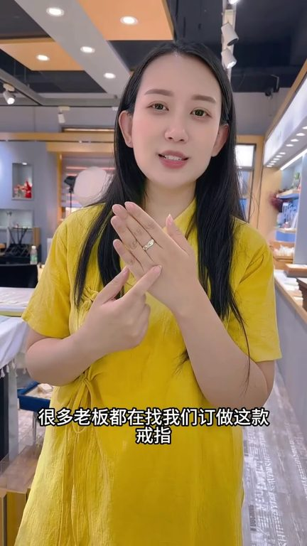
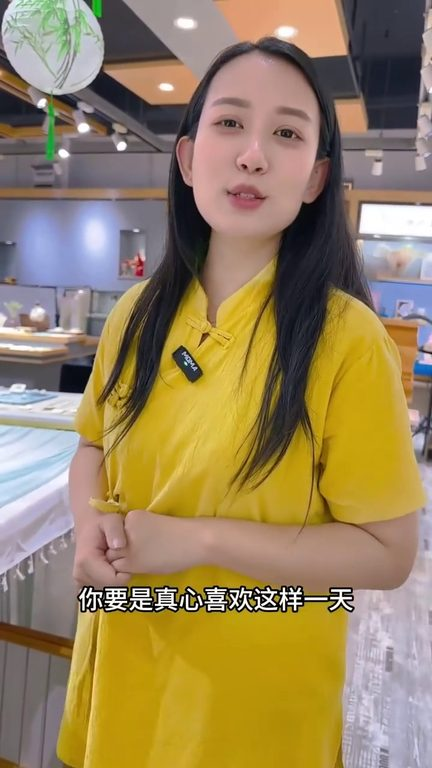

TOP 1 · 代表素材深度拆解
核心放量 稳健
视频为原始素材 HTTPS 链接；点击后加载，建议在网络环境良好时播放。
26.5万素材消耗
5.14%CTR
35.3%类目消耗占比
+0.57pp较类目均值
表现判断
该素材是类目内第 1 名，属于“核心放量”；CTR 高于类目均值。消耗体现承接规模，CTR 体现首屏与定向效率，两项应结合判断，不能仅以单指标下结论。
表达标签
口播三段式证据
开场钩子结过婚的姐姐左手中指尽量不要控着都知道穿金不如带银银是很好的视频女人多带带是很好的这个七厘米戒指啊是我做过最满意的一枚戒指但是做起来太麻烦了
中段论证你看整个戒指呢纯手工打造的下面底部呢全部是卖碎了图案上面是七颗大米的形状这个呢叫七厘米以前呢我们带七厘米都是带七颗大米哎呀你挂身上不方便放别的地方的又搞不好又丢掉了这次我们把它做成戒指是不是就更方便大家的佩戴了是的拿回去往手上一带手速手续男女都能戴他可不是光好看那么简单的大米大家都知道他可不是粮食那么简单在古代呢他有文化寓意你看以前说起来拿个当光的干嘛的人家…
结尾转化但是我们主要是做银产品的设计和批发如果你要是喜欢啊咱们这个就是普通的一个成本的价格拿回去呢戴在手上当您不需要的时候当您用不上的时候你把它融掉直接它改成项链戒指都是没有问题的那你这个贵不贵好批发的不说钱的问题啊你要是真心喜欢这样我先带你们去我工厂里看看它整个的制作过程你就知道这有好在哪里呢
有效点
- CTR 5.14% 高于类目均值 4.57%，开场或人群指向具备点击优势
- 素材已进入类目消耗 Top，核心表达具备继续拆分测试的价值
迭代动作
- 保留当前高效钩子，复制 3 个变量版本：人物、首句和首帧分别单变量测试
- 视频时长偏长，建议剪出 30–45 秒短版，仅保留钩子、两项证据和一次 CTA
- 复核功效、绝对化及价格稀缺措辞；增加适用边界和效果因人而异提示
合规关注

钩子建立 · 5.5s

场景/问题展开 · 41.4s

卖点证据 · 95.2s

转化收口 · 131.1s
查看完整口播摘要
结过婚的姐姐左手中指尽量不要控着都知道穿金不如带银银是很好的视频女人多带带是很好的这个七厘米戒指啊是我做过最满意的一枚戒指但是做起来太麻烦了就这么一枚戒指不休息的话要做20个小时有没有努力的半年口袋还是鼓不起来的经常做事情已经很用心很努力了总是临门差那么一早就是差点意思的你就把这个拿回去带在你的左手没事呢尽量就不要摘掉这啥东西啊这可是个好东西啊你看整个戒指呢纯手工打造的下面底部呢全部是卖碎了图案上面是七颗大米的形状这个呢叫七厘米以前呢我们带七厘米都是带七颗大米哎呀你挂身上不方便放别的地方的又搞不好又丢掉了这次我们把它做成戒指是不是就更方便大家的佩戴了是的拿回去往手上一带手速手续男女都能戴他可不是光好看那么简单的大米大家都知道他可不是粮食那么简单在古代呢他有文化寓意你看以前说起来拿个当光的干嘛的人家是不是啊就是级别高利就是他的一些团统设计多少单粮食这个呀可不是简简单单说光票的那么简单尤其现在你看人家做生意的大老板很多时候公司开业的时候亲朋好友送来的礼物是不是都有大卖缩这个你们懂的就请啊拿回去啊现在的广东的福建的上海的重庆的反正各个地方经商的很多老板都在找我们盯着这款戒指这个呢说白了其实就是银戒指东西呢你说品质确实不错但是那么多款式为什么要戴它这个你可以自己去看一下可以自己去查一下这个价格呢其实外面价格卖的是很贵的是的你去随便找一些那些搞私询的你去问一下这个价格非常的高它不是让普通的�戒指卖给你的但是我们主要是做银产品的设计和批发如果你要是喜欢啊咱们这个就是普通的一个成本的价格拿回去呢戴在手上当您不需要的时候当您用不上的时候你把它融掉直接它改成项链戒指都是没有问题的那你这个贵不贵好批发的不说钱的问题啊你要是真心喜欢这样我先带你们去我工厂里看看它整个的制作过程你就知道这有好在哪里呢